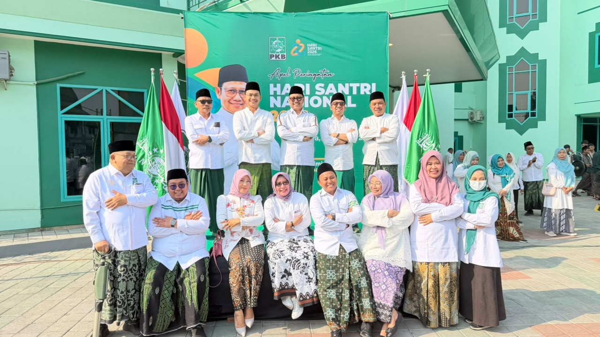

oleh : Nasfa Uuth Akhmadie
(Santri dan Ketua DPAC PKB Kec. Rungkut)
Setiap 22 Oktober, peringatan Hari Santri berhenti pada upacara. Sarung dipakai, pawai digelar, takbir dikumandangkan. Sementara itu, sistem yang menentukan hidup warga berjalan tanpa koreksi. Paradigma lama merayakan jasa masa lalu. Realitas baru menuntut penilaian atas cara kerja hari ini.
Saya menulis sebagai saksi, bukan sebagai pemilik agenda. Yang saya lihat setiap hari bukan kekurangan orang per orang. Yang saya lihat adalah mekanisme yang berulang, dirawat bersama, dan jarang diperiksa.
Kritik pertama bersifat kultural. Kita memelihara romantisme sejarah sampai lupa bahwa Resolusi Jihad 1945 lahir dari pembacaan situasi. Fatwa itu keluar karena ada penderitaan yang harus dijawab. Hari ini penderitaan masih ada, tetapi jawaban kita berhenti pada doa bersama dan foto di panggung.
Kritik kedua bersifat organisasi. Kultur kita masih feodal. Kader terbaik dihargai dengan jabatan, bukan kapasitas. Usul kritis mudah dianggap tidak sopan. Keputusan penting menunggu restu satu orang. Organisasi tumbuh besar di atas loyalitas, tetapi lemah dalam membaca persoalan.
Kritik ketiga bersifat sistemik dan berada di luar tubuh kita. Perencanaan pembangunan dijalankan sebagai formalitas. Musyawarah kelurahan berlangsung singkat, dengan daftar usulan yang sudah disiapkan. Dokumen anggaran tersedia, tetapi hampir tidak pernah dibaca warga. Partisipasi berubah menjadi tanda tangan di daftar hadir.
Di titik itu, kritik kepada santri tidak boleh berhenti pada soal kemalasan. Ada desain yang membuat partisipasi sulit. Jadwal rapat di jam kerja. Bahasa dokumen yang hanya dipahami kalangan teknis. Kanal pengaduan tanpa kepastian jawaban. Sistem seperti ini menghasilkan warga yang apatis. Apatis itu kemudian dipakai sebagai alasan untuk tidak melibatkan warga.
Ekonomi memberi contoh paling jelas. Warga kampung kota menghadapi tiga tekanan sekaligus. Sewa naik, kerja tidak pasti, utang mudah diambil dan sulit dilunasi. Kehadiran rentenir bukan karena warga tidak paham agama. Kehadirannya karena lembaga keuangan formal terlalu jauh, terlalu berbelit, dan terlalu mahal untuk ukuran warung kecil.
Koperasi dan bank sampah sering disebut sebagai jawabannya. Kenyataannya banyak yang berhenti setelah peresmian. Tidak ada pembukuan, tidak ada jadwal pengangkutan, tidak ada pembeli tetap, dan tidak ada audit. Kegagalan itu bukan kegagalan semangat, melainkan kegagalan manajemen. Selama santri hadir hanya sebagai penasihat, model seperti ini akan terus mati pada tahun pertama.
Politik perlu dinilai dengan ukuran yang sama. Hubungan antara partai dan warga dibangun lewat bagi kaos, bagi sembako, dan bagi panggung. Cara itu menghasilkan kerumunan, bukan kader. Kerumunan datang saat ada acara dan pulang saat acara selesai. Tidak ada kapasitas yang tersisa setelahnya.
Akibatnya jelas. Ketika kebijakan yang merugikan warga disahkan, tidak ada jaringan yang siap menolak dengan argumen. Yang tersedia hanya kemarahan yang cepat menyala dan cepat padam. Kaderisasi berhenti pada rekrutmen administrasi. Kemampuan membaca anggaran, memahami kontrak, dan mengawal perkara tidak pernah dilatih.
Pendidikan mengalami hal serupa. Kita menyebut pentingnya ilmu, tetapi mengukur keberhasilan dari jumlah lulusan. Sekolah dan pesantren menghasilkan banyak orang yang hafal teori. Pasar kerja menuntut keterampilan yang tidak pernah diajarkan. Kesenjangan itu lalu dijelaskan dengan alasan takdir. Padahal itu hasil kurikulum dan kebijakan yang tidak pernah dievaluasi.
Ruang digital memperbesar semua masalah itu. Isi yang paling cepat menyebar adalah yang paling emosional, bukan yang paling akurat. Angka jarang diperiksa. Dokumen jarang dibuka. Perdebatan berjalan dengan potongan video. Kebiasaan ini membentuk publik yang mudah digerakkan, tetapi sulit diandalkan untuk mengawal kebijakan.
Rekognisi tanpa distribusi mudah berhenti pada penghargaan. Pemerintah memberi ruang simbolik kepada tokoh agama, lalu kebijakan ekonominya tetap berjalan seperti biasa. Foto bersama dipublikasikan, sementara harga sewa dan upah tidak berubah. Publik menerima pengakuan, bukan keadilan.
Redistribusi tanpa rekognisi juga bermasalah. Bantuan turun tanpa melibatkan warga dalam menentukan penerima. Warga diperlakukan sebagai objek data, bukan pihak yang tahu kondisi di lapangan. Hasilnya program jalan, tetapi rasa memiliki hilang. Dua sisi itu hanya bekerja bila dijalankan bersama.
Sampai di sini, kritik sosial saja tidak cukup. Persoalannya melampaui kebijakan yang salah. Ada cara memaknai agama di ruang publik yang perlu diperiksa. Fungsi profetik agama bukan sebagai penghibur di tengah penderitaan. Ia adalah kekuatan yang membebaskan manusia dari penindasan.
Musa diperintah menghadap Fir'aun, bukan berdoa di belakang istananya. Isa berhadapan dengan kekuasaan Romawi, tidak berkhotbah di pinggir jalan. Nabi Muhammad menentang monopoli ekonomi Quraisy, sambil mengajar akhlak kepada pedagang yang tidak menipu. Ketiganya berada di tengah konflik nyata, bukan di menara.
Al-Qur'an menyebut mustadh'afin sebagai pihak yang dilemahkan. Istilah itu tidak hanya soal ekonomi. Ia mencakup mereka yang dikeluarkan dari ruang bicara dan dianggap tidak layak didengar. Dalam kategori itu, banyak warga kampung kota hari ini masuk. Mereka bukan kekurangan iman. Mereka kekurangan wakil.
Dari situ saya menilai bahwa keadilan punya dua sisi yang tidak boleh dipisah. Sisi pertama adalah pengakuan, yaitu mengembalikan martabat kelompok yang dilemahkan. Sisi kedua adalah distribusi, yaitu memperjuangkan akses nyata terhadap anggaran, kerja, pendidikan, dan tempat tinggal. Empati tanpa anggaran akan berhenti jadi kutipan.
Resolusi Jihad 1945 harus dibaca dengan cara ini. Ia bukan monumen untuk dikagumi setiap tahun. Ia metode: membaca penderitaan, menentukan sikap, menanggung risiko. Metode itu tidak kedaluwarsa. Yang kedaluwarsa adalah cara kita memperingatinya.

Tradisi pembaruan dalam Nahdlatul Ulama juga lahir dari penilaian bahwa cara lama tidak lagi memadai. Namun pembaruan tidak boleh berhenti pada istilah. Ia harus turun menjadi keputusan tentang siapa yang dilatih, apa yang diukur, dan bagaimana kegagalan diakui.
Sintesisnya bukan penolakan terhadap ritual, melainkan pemindahan tenaga dari panggung ke prosedur. Saya menyebut santri sebagai penilai sistem. Bukan penjaga moral yang berdiri di luar lapangan, tetapi pihak yang terkena kebijakan dan karena itu berhak menilai kebijakan.
Saya tidak menilai bahwa santri tidak punya modal. Justru sebaliknya. Jaringan pesantren, masjid, majelis taklim, dan alumni adalah infrastruktur sosial yang jarang dimiliki lembaga lain. Persoalannya, infrastruktur itu dipakai untuk mengumpulkan orang, bukan untuk menilai kebijakan.
Pekerjaan pertama adalah mengukur hasil, bukan kegiatan. Satu bank sampah yang berjalan dua tahun lebih berharga daripada sepuluh peresmian tanpa audit. Satu pendampingan yang menyelesaikan sengketa tanah lebih berharga daripada seratus seminar advokasi. Ukuran seperti ini memotong budaya seremonial tanpa perlu pidato tambahan.
Pekerjaan kedua adalah menerjemahkan data. Anggaran kelurahan, daftar penerima bantuan, izin bangunan, dan dokumen perencanaan perlu diringkas ke bahasa yang bisa dibaca warga. Keterbukaan bukan sekadar mengunggah berkas. Keterbukaan berarti warga tahu apa yang harus ditanyakan dan kepada siapa.
Pekerjaan ketiga adalah melatih kapasitas. Setiap lembaga perlu orang yang bisa membaca angka, memahami kontrak, dan menyusun argumen kebijakan. Bekal itu tidak lahir dari semangat keagamaan semata. Ia harus dilatih, diuji, dan diperbarui seperti keterampilan lainnya.
Pekerjaan keempat adalah menjadwalkan partisipasi di luar jam kerja dan di tempat yang dekat dengan warga. Rapat pada jam kerja hanya melibatkan mereka yang punya waktu luang. Warga yang bekerja harian justru paling terdampak oleh kebijakan. Mereka pula yang paling sering absen dari ruang pengambilan keputusan.
Ada dua risiko yang harus saya sebut sebagai saksi. Risiko pertama, otokritik berubah menjadi jargon. Ia diucapkan di seminar, lalu tidak mengubah satu prosedur pun. Ukurannya bukan seberapa sering kata itu dipakai. Ukurannya adalah seberapa banyak keputusan yang berubah setelahnya.
Risiko kedua, otokritik dipakai untuk membubarkan tanggung jawab. Semua pihak mengaku salah, lalu tidak ada yang memperbaiki apa pun. Kritik seperti itu hanya menghasilkan rasa nyaman kolektif. Ia tidak menghasilkan perubahan.
Contoh paling nyata ada pada bantuan sosial. Data penerima sering tidak diperbarui, sementara keluhan warga tidak memiliki jalur koreksi yang jelas. Program yang seharusnya mengurangi ketimpangan bisa menjadi sumber ketimpangan baru. Persoalannya bukan niat petugas, melainkan mekanisme verifikasi yang lemah.
Digitalisasi layanan menambah lapisan masalah. Antrean dipindahkan ke aplikasi, tetapi pendampingan tidak disiapkan. Warga lanjut usia, pekerja harian, dan mereka yang tidak punya ponsel pintar semakin jauh dari layanan. Efisiensi dari sisi penyelenggara berubah menjadi hambatan bagi warga yang paling membutuhkan.
Pola ini berulang pada banjir, sampah, dan permukiman. Persoalan itu muncul setiap tahun, dibahas setiap tahun, dan diselesaikan secara darurat. Respons darurat tidak salah. Yang salah adalah membiarkan darurat berulang karena akar persoalannya tidak pernah ditangani.
Yang saya saksikan di banyak tempat bukan kekurangan orang, melainkan kekurangan pintu. Warga tahu persoalannya, tetapi tidak tahu meja mana yang harus didatangi. Pelaku usaha kecil paham hambatannya, tetapi tidak sanggup membiayai pengurusan izin. Pemuda kampung punya tenaga, tetapi tidak punya jalur masuk ke pekerjaan formal. Pintu yang tertutup lama akan dianggap tembok.
Kritik terhadap sistem tidak berarti menolak negara. Ia justru bentuk kesetiaan pada janji konstitusi. Negara yang adil tidak lahir dari warga yang diam. Ia lahir dari warga yang tahu haknya, tahu prosedurnya, dan bersedia menempuh jalur yang melelahkan untuk menuntutnya.
Saya juga perlu jujur soal batas. Menilai sistem tidak otomatis membuat kita lebih bersih. Kita menuntut transparansi dari pemerintah, tetapi tidak membuka pembukuan lembaga sendiri. Kita mengkritik nepotisme, tetapi memilih pengurus berdasarkan kedekatan. Kita menyerukan upah layak, tetapi membiarkan pekerja di lingkungan sendiri dibayar seadanya.
Pengakuan itu tidak melemahkan posisi. Kritik hanya punya bobot ketika yang mengkritik bersedia dinilai dengan ukuran yang sama. Tanpa itu, kritik berubah menjadi retorika. Retorika hanya bertahan sampai panggung berikutnya.
Karena itu penilaian harus spesifik. Sebut persoalannya, sebut mekanisme yang gagal, sebut pihak yang berwenang, dan sebut tenggat waktunya. Tanpa kekhususan, kritik mudah dibantah dengan jawaban umum. Dengan kekhususan, kritik memaksa adanya tindak lanjut.
Bila cara ini ditempuh, peringatan 22 Oktober tidak lagi berhenti pada atribut. Ia menjadi rapat kerja tahunan atas sistem yang berjalan. Santri keluar dari posisi penonton yang sibuk mengomentari, dan masuk ke posisi pihak yang menuntut perbaikan dengan argumen dan data.
Perubahan seperti ini tidak menghasilkan liputan besar. Ia justru bekerja di ruang sepi, pada dokumen, jadwal, dan daftar hadir. Tetapi di ruang sepi itulah keadilan biasanya ditentukan. Bukan di panggung, bukan di spanduk, bukan di sorak massa yang berkumpul lalu bubar.
Resolusi Jihad 1945 memberi pelajaran paling keras. Para kiai tidak menunggu keadaan membaik. Mereka membaca bahaya, mengambil sikap, dan menanggung akibatnya. Hari ini bahayanya berbeda, tetapi sikap yang dituntut sama: berhenti merayakan, mulai menilai.
Warisan 1945 bukan spanduk, melainkan keberanian menilai keadaan. Hari Santri sebaiknya ditutup dengan satu pertanyaan yang dijawab jujur: sistem mana yang kita biarkan berjalan salah. Tanpa jawaban itu, peringatan hanya ingar-bingar tanpa makna. Dengan jawaban itu, sarung tetap basah oleh kerja, bukan oleh keringat panggung.